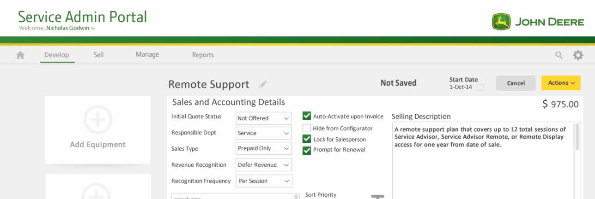
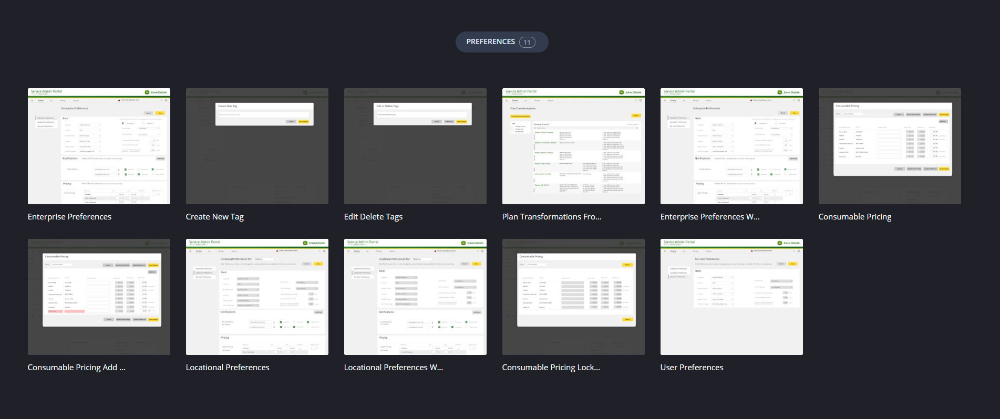
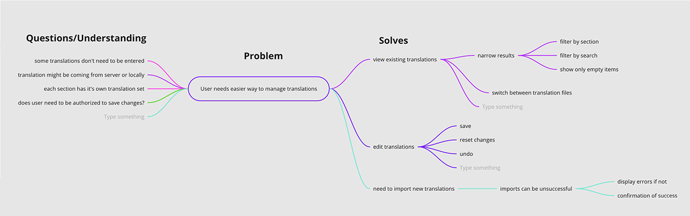

<!DOCTYPE html><html lang="en" id="top"><head><meta charset="UTF-8"/>
<meta name="viewport" content="width=device-width, initial-scale=1.0">
<meta http-equiv="X-UA-Compatible" content="IE=edge"/><title>Chris Norton: Product/UX/UI/Visual Designer</title><link rel="preconnect" href="https://fonts.googleapis.com">
<link rel="preconnect" href="https://fonts.gstatic.com" crossorigin><!--link(href='https://fonts.googleapis.com/css2?family=Open+Sans:wght@400;700&family=Source+Sans+3&display=swap', rel='stylesheet')--><link href="https://fonts.googleapis.com/css2?family=Arimo:ital,wght@0,400..700;1,400..700&amp;family=Source+Sans+3&amp;display=swap&amp;display=swap" rel="stylesheet"/><link rel="stylesheet" href="https://cdnjs.Cloudflare.com/ajax/libs/font-awesome/4.7.0/css/font-awesome.min.css"/><link rel="stylesheet" href="styles/styles-2025.css"/><script src="js/polyfill.min.js"></script></head></html><body><div class="wrapper bg-light-1"><div class="page"><header><h1>Christopher Norton</h1><nav><a href="index.html">Home</a><a href="index.html#projects">Projects</a><a href="#contactForm">Contact</a><a class="linkedin" href="https://www.linkedin.com/in/christopher-p-norton/" target="_blank"></a></nav></header><section class="bubble"><div class="page-nav"><a class="back" href="index.html#projects"><svg width="24" height="24" viewBox="0 0 24 24" fill="none" xmlns="http://www.w3.org/2000/svg">
<path d="M20 18V20H13.5C9.91 20 7 17.09 7 13.5V7.83L3.91 10.92L2.5 9.5L8 4L13.5 9.5L12.09 10.91L9 7.83V13.5C9 16 11 18 13.5 18H20Z" fill="black"/>
</svg>Projects</a></div><div class="content"><p></p><p><small>Prototype screens for a services management application with many complex process states and user privileges.</small></p><h2>John Deere</h2><div class="tags"><div class="tag ux">UX</div><div class="tag ui">UI</div><div class="tag uxr">UXR</div><div class="tag redacted">Limited</div></div><h4>Limited</h4><p>Due to the sensitive nature of the projects I worked on at John Deere, I walked away with very few visuals despite my 6 years there as a solo designer to various dev teams so you'll just have to take my word for it that I worked on <strong>6 enterprise-level</strong>, process and state-driven web and mobile applications both internal and customer-facing.</p><h6>Here's a few things I did during my time:</h6><ul><li>Designed customer-facing e-commerce sites for $750,000+ vehicles and machinery for agriculture, forestry, and construction.</li><li>Worked on applications and features that touched <strong>billions</strong> of dollars in sales and services.</li><li>Designed backend applications for sales staff, dealership owners, warehouse managers and staff as well as upper-level business strategists and corporate management.</li><li>Designed CTAs such as building purchase quotes, managing warranties, managing service agreements, tracking parts inventory, and scheduling availability.</li><li>Integrated department-level one-off legacy apps into flows of more current, company-wide applications to provide in-line context, consolidate backlog and update branding for consistency.</li></ul><h6>Specifically:</h6><ul><li>Interviewed and established a feedback loops for stakeholders with a range of concerns and access privileges to CTAs and content.</li><li>Mapped out information architecture and created wireframes and interactive prototypes using Balsamiq, Sketch, and <strong>Figma</strong>.</li><li>Helped build a design system with branded themes for Agriculture, Forestry, Construction, and Hitachi.</li><li>Provided markup instructions and working HTML/CSS/JS prototypes for dev teams to execute flows.</li><li>Served as the secret CSS ninja troubleshooting the most complex CSS layout issues.</li><li>Performed usability and accessibility testing on prototypes and from live deployments, compiling results based on promotion success, time to complete tasks, feature adoption, ticket closure rates, and other metrics.</li></ul><h6>Sample Planning Artifacts</h6><p><small>Mindmap defining problems and anchoring some CTAs for a simple translations app discussion.</small></p><p></p><h6>Usability Testing Artifacts</h6><div class="usability-testing-scripts"></div><h6>Results & Analysis<p></p></h6></div></section><div class="page-nav"><a class="back" href="index.html#projects"><svg width="24" height="24" viewBox="0 0 24 24" fill="none" xmlns="http://www.w3.org/2000/svg">
<path d="M20 18V20H13.5C9.91 20 7 17.09 7 13.5V7.83L3.91 10.92L2.5 9.5L8 4L13.5 9.5L12.09 10.91L9 7.83V13.5C9 16 11 18 13.5 18H20Z" fill="black"/>
</svg>Projects</a></div></div></div><footer class="bg-light-4"><div class="about-me"><h6>Christopher Norton</h6><p>Senior designer with experience in UX/UI launching 26 new products and countless features for web and mobile in the last 10 years. Able to lead, execute, analyze, and iterate on products from start to finish for cross-functional and regionally diverse teams. Strong problem-solving skills and a design thinker with a proven track record in enterprise-level B2B, B2C and SaaS products for clients such as: <strong>Boeing</strong>, <strong>Dell</strong>, <strong>John Deere</strong>, <strong>Booz Allen</strong>, <strong>Animal Planet</strong>, <strong>The Learning Channel</strong>, and others.</p><small><strong>Hidden Gem</strong>: I also developed this site from scratch using HTML5, CSS3, and JS using Node.js to run a local preview server which compiles and minifies Sass on the fly with Autoprefixer, CSS Lint and ES Lint. Version control is run through Github pages. I have wide a wide range of skills enabling me to bridge the communication gap between business stakeholders, designers and engineering teams.</small></div><div class="social-links"><h4>Site</h4><a href="index.html">Home</a><a href="index.html#projects">Projects</a><a href="https://www.linkedin.com/in/christopher-p-norton/" target="_blank">LinkedIn</a></div><form method="post" name="contactForm" id="contactForm"><h6>Contact Me</h6><div class="form-group"><label for="fullName">Full Name</label><input name="fullName" id="fullName" type="text"/></div><div class="form-group"><label for="email">Email</label><input name="email" id="email" type="text"/></div><div class="form-group"><label for="message">Message</label><textarea name="message" id="message" rows="7"></textarea></div><div class="form-group"><button type="submit" id="submitContact">Send</button></div><div class="form-group"><p id="formStatus">Your message has been sent.</p></div></form></footer></body><script src="js/contact.js"></script>